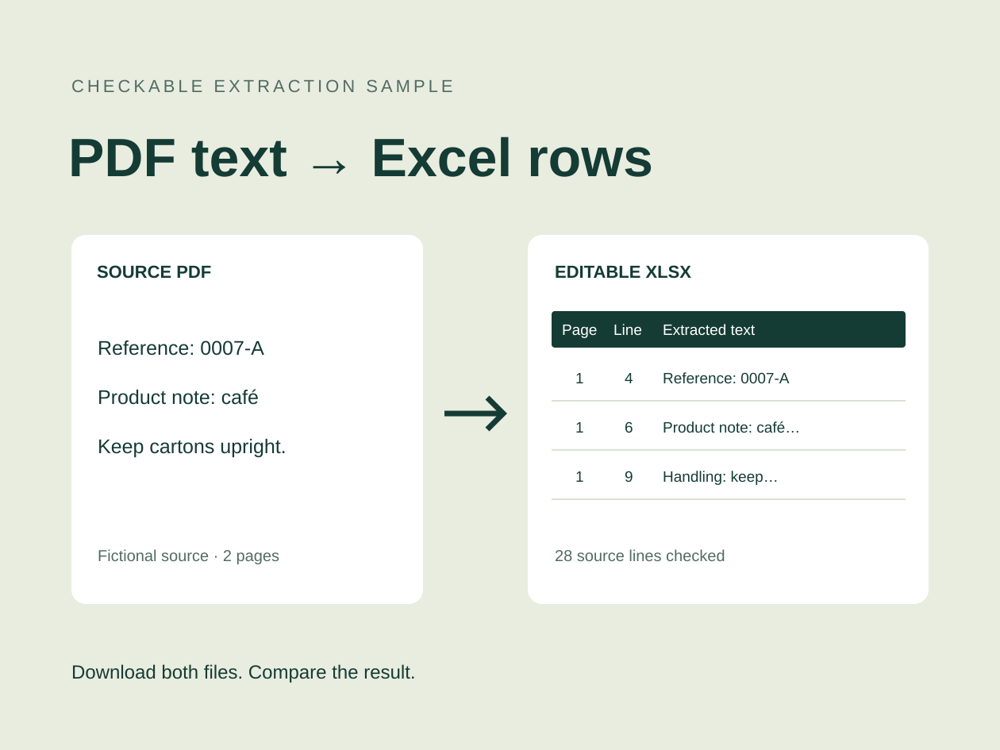
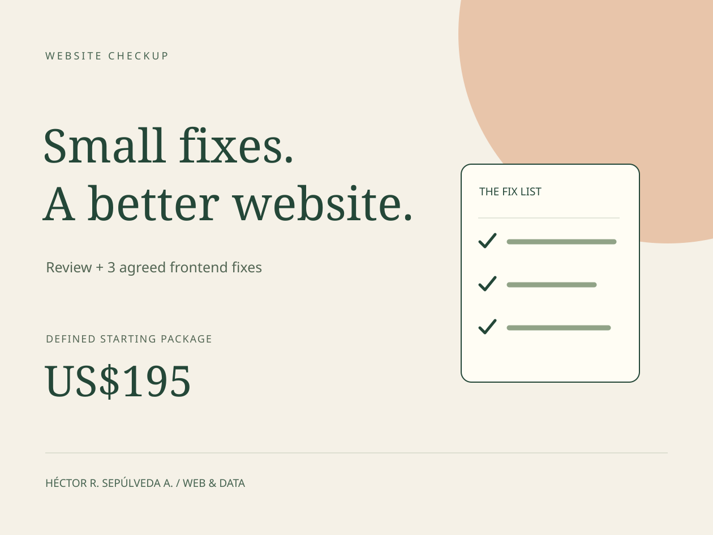
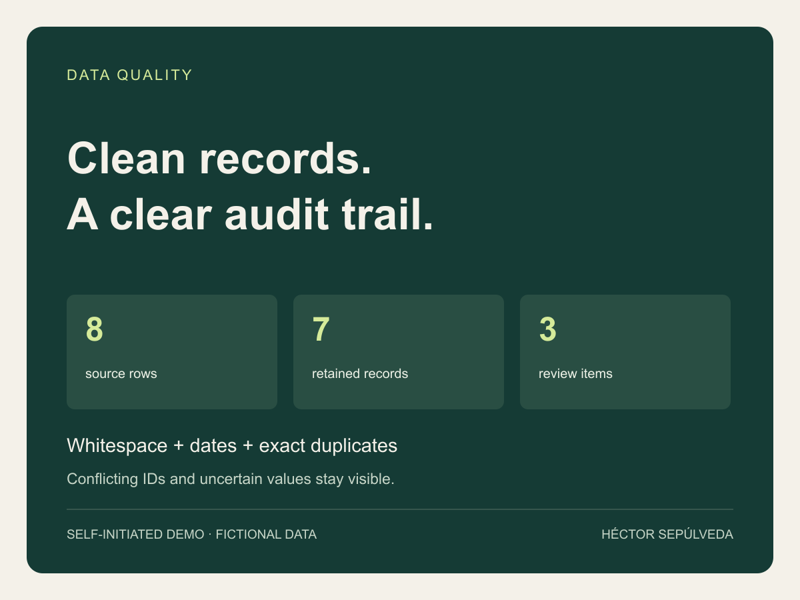
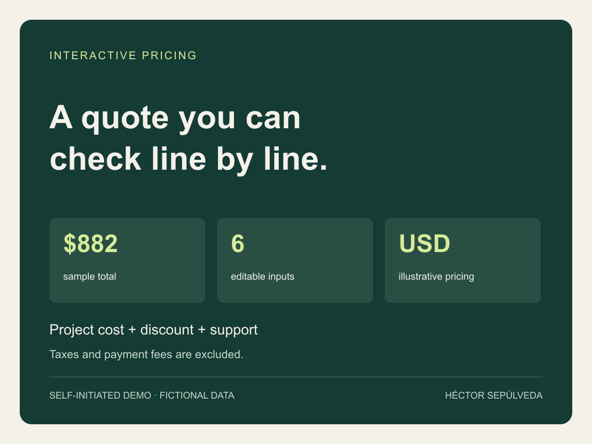
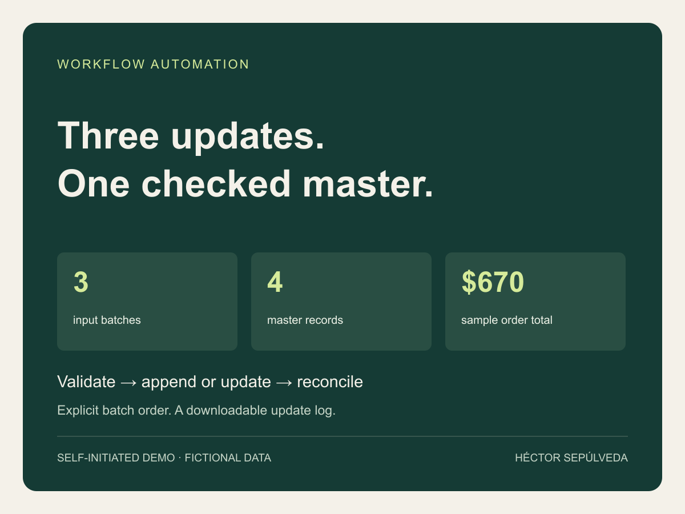
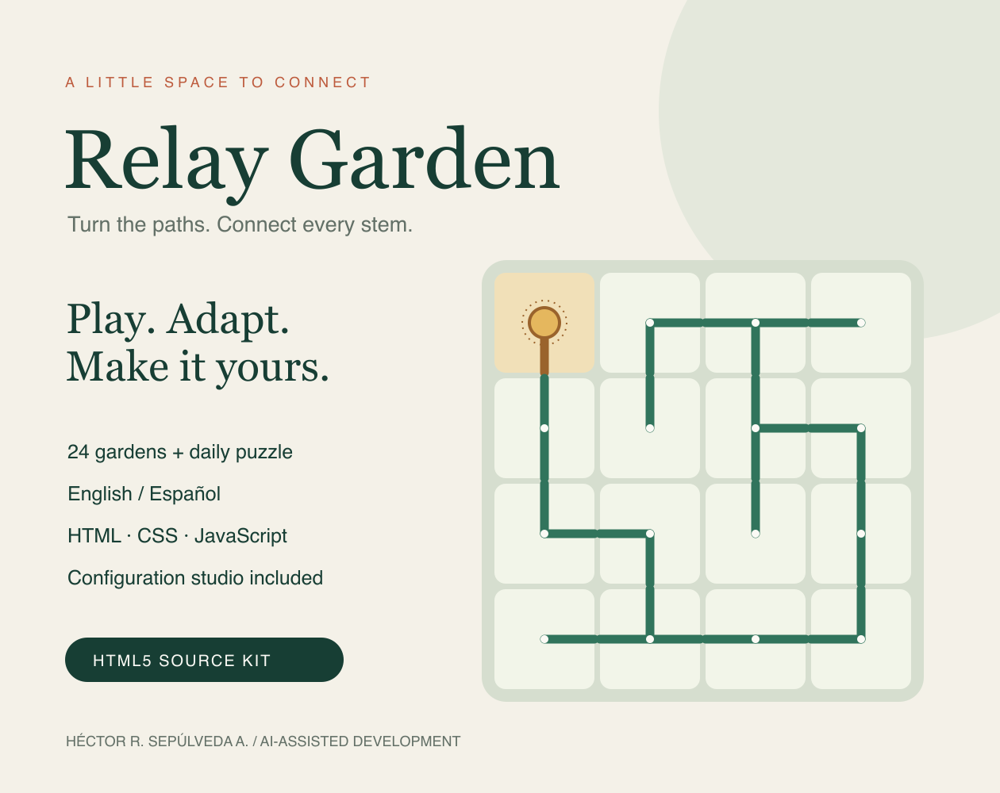

PDF Text to Editable Excel
Compare a fictional two-page PDF with its verified, editable Excel output. Accents, punctuation and source line order are retained in this known sample.
Inspect the PDF and Excel sample →Explore bilingual websites, frontend improvements, data tools and a playable browser puzzle.

Compare a fictional two-page PDF with its verified, editable Excel output. Accents, punctuation and source line order are retained in this known sample.
Inspect the PDF and Excel sample →Three linked pages in English and Spanish with a local project-brief builder. Clearly labeled fictional business; no bookings or payments.
Explore the bilingual demo →
An interactive before/after demonstration of responsive wrapping, clear links and visible keyboard focus. Self-initiated example.
Try the fix demonstration →
A working CSV cleanup demo with explicit date rules, exact-duplicate handling, a change log and a review queue. Fictional data.
Open working demo →
A working six-input quote calculator with an itemized estimate, input validation and a downloadable summary. Sample prices.
Open working demo →
A working report-consolidation demo that validates three CSV batches, updates a master by order ID and exports an audit log.
Open working demo →
A playable connection puzzle with 24 gardens, a daily challenge, English/Spanish text and local saves. Self-initiated work developed with AI assistance.
Play the free demo →Each prototype explains its assumptions, accepted input format and limits.
Calculations and data transformations include validation and downloadable results.
Interactive tools run in your browser. The PDF extraction sample includes downloadable source and output files.